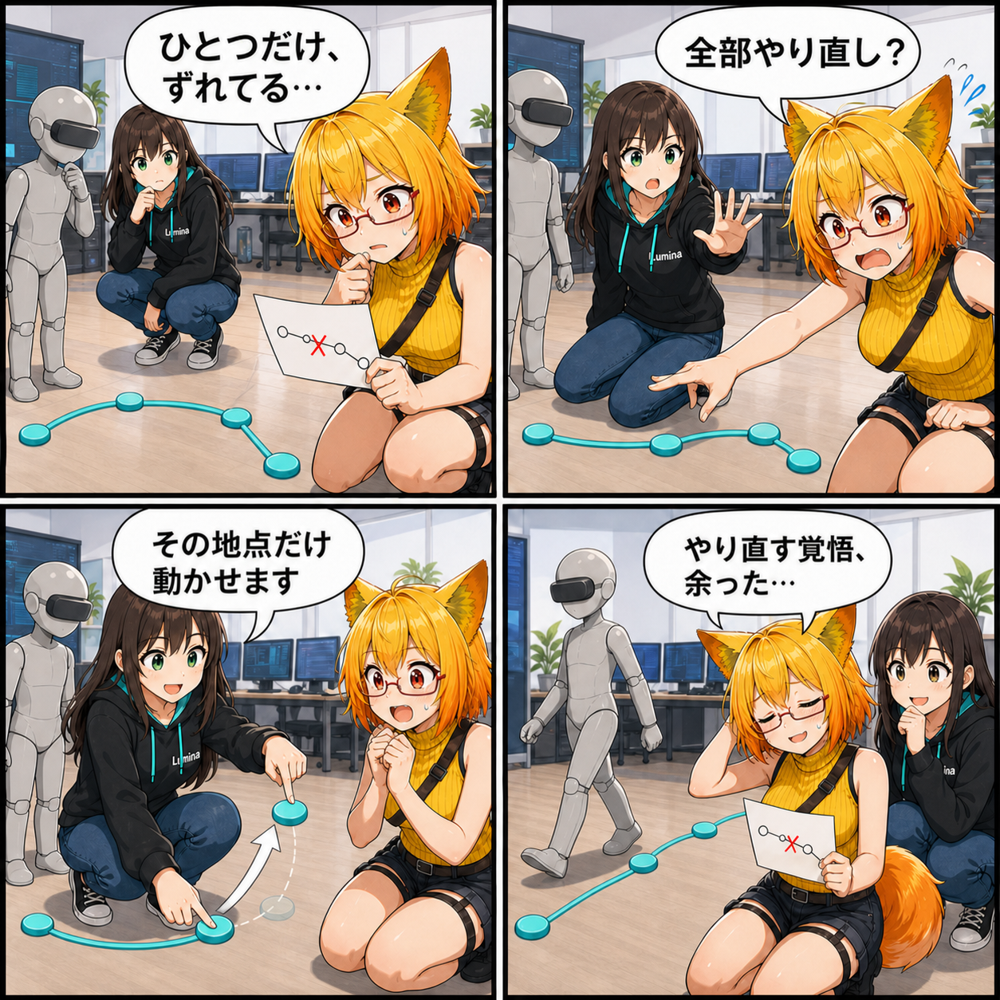

道は引き直さない。置いた歩行地点を動かせるようにした日
配置済みの歩行地点をドラッグ修正し、経路線も追従させるデスクトップ経路編集を追加しました。
92294e1（「Unity 6000.5.9f1への移行と起動基盤を更新」）。対象コミットは5件、集計差分は44ファイル、67,687行追加、61,902行削除でした。Viewer作業ツリーはクリーンで、実績は期間内のコミットだけを基にしています。集計期間は 2026-08-21 03:00:00 JST から 2026-08-22 02:59:59 JST までです。
配置済みの地点を、その場で直す
歩行経路は複数の地点を順番に置いて作ります。これまでは途中の1点が少しずれただけでも、後ろから取り消して置き直す必要がありました。今回、経路編集を開始・終了する状態を明確にし、編集している間は配置済みの地点マーカーをドラッグして移動できるようにしました。
マウスを離すとその地点の移動が確定し、経路を結ぶ線もドラッグ中に追従します。1点の修正のために経路全体を引き直す必要がなくなり、細かなコース調整を試しやすくなりました。
編集中と歩行中を混ぜない
経路編集の開始・終了、地点追加、再生の役割も整理しました。歩行中は経路編集を開始できず、経路編集中は歩行を開始できません。選択したアバター自身や経路マーカーを、地面の配置先として誤って拾わない判定も追加しています。
地点マーカーは少し大きく、線も太くして見つけやすくしました。対象アバター名と編集状態をUIへ表示し、今どのアバターの道を直しているかも確認できます。
同じ期間に進んだこと
デスクトップのビューポートには、選択中のアバターを正面・背面・右・左・上・下から確認する6方向ボタンを追加しました。カメラの注視点を選択アバターへ合わせる処理も入り、経路や姿勢を別角度から確かめやすくなっています。
このほか、歩行ループの修正と検証動画レコーダー、常駐処理を診断するEditorツール、Unity 6000.5.9f1への移行と起動基盤の更新も行いました。大きな行数差分にはUnityのシリアライズ済みPrefabが含まれるため、行数だけで実装規模を判断しないよう注意が必要です。
技術的なポイント
- 経路編集の開始・終了を独立した状態として管理
- 配置済み地点をレイ判定で選び、ドラッグ中に座標・マーカー・経路線を更新
- 経路マーカーと選択アバターのColliderを新しい地点の配置判定から除外
- 編集中と歩行中の操作を相互に禁止し、UIの有効状態を同期
- 正面・背面・右・左・上・下の6方向カメラプリセットを共通ビューポートUIへ追加
補足
集計した5件のコミット全体では44ファイルが変わりました。行数の大部分はUnityが保存する大きなPrefabの更新によるものです。Viewerの未コミット差分はなく、記事と4コマには集計期間内にコミットされた事実だけを使っています。
4コマの裏話
最後の1点だけずれた道を見て、ろひが全部の置き直しを覚悟します。ところがルミナは、ずれた地点だけをつまんで移動。無事に歩けたあと、ろひの手元には出番を失った「やり直しメモ」だけが残る、“何も起きなかった安心”をオチにしました。
まとめ
歩行経路の編集が、置く・消す中心の操作から、配置済みの地点を直接つかんで直せる操作へ進みました。編集と歩行の状態を分け、誤った対象を拾わない判定も加えたことで、経路を細かく調整する流れが分かりやすくなっています。
本日のひとこと： 全部やり直す覚悟ほど、使わずに済むとうれしい。